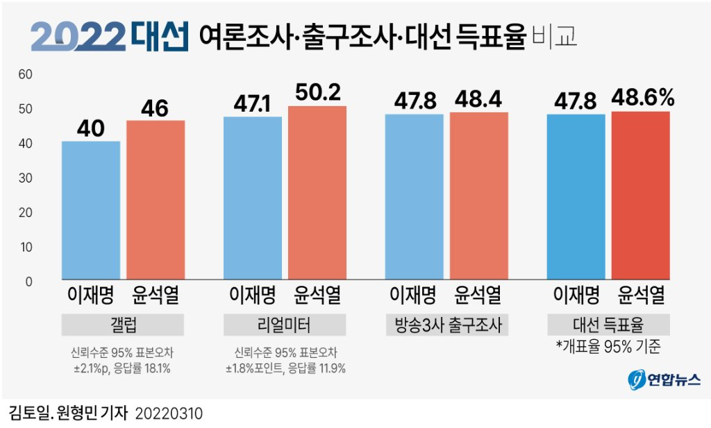
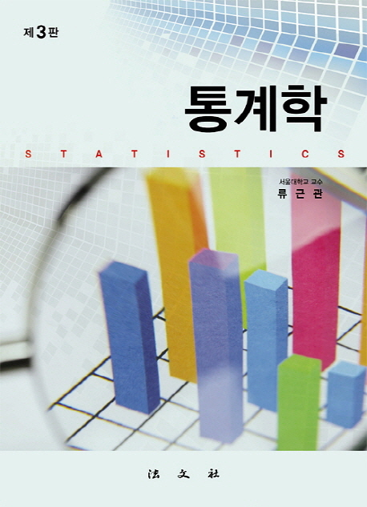
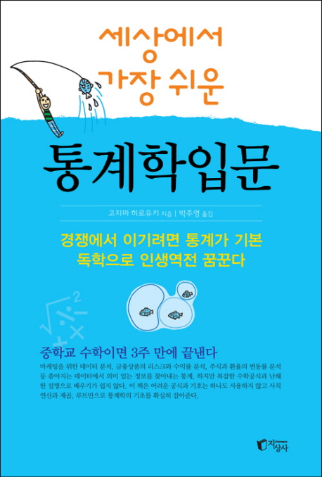
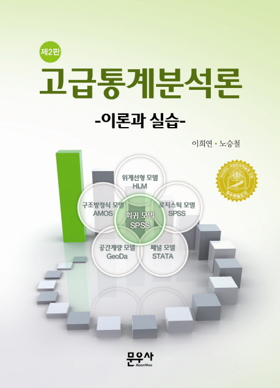
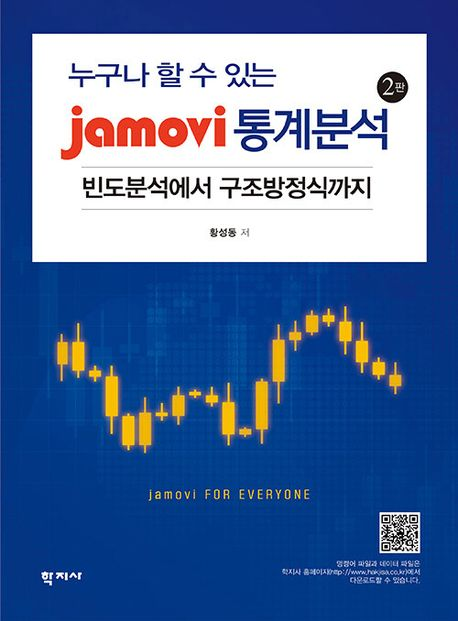
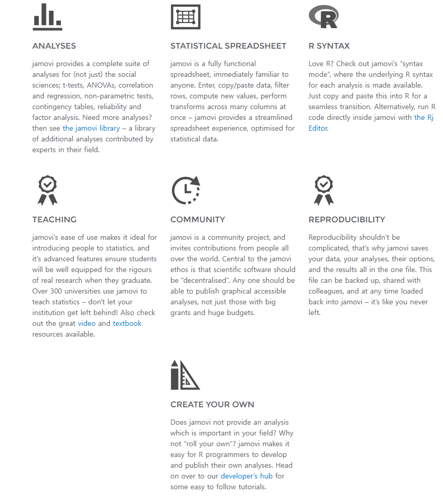
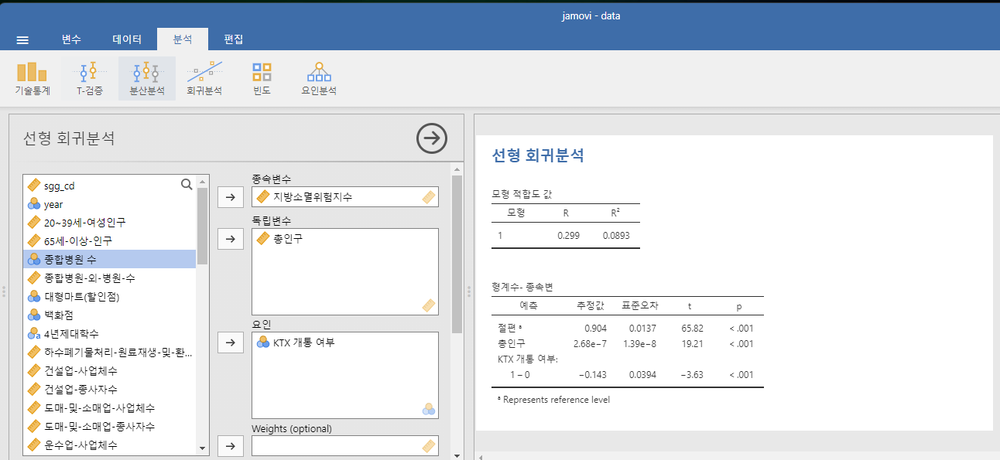

도시교통통계학
(Introduction to Urban and Transport Statistics)
(Introduction to Urban and Transport Statistics)
기초통계이론의 학습
1학년
강남구 아파트 실거래가(만원) (2022년 6월~8월 / 145건)
Q) 이 숫자를 보고 뭘 알 수 있나?
좋은 데이터도 요약하거나 정리하지 않으면 의미가 없다.
1. 대표할 수 있는 값이 없을까?
평균 거래가격: 210,414만원
2. 대표값은 충분히 대표가 가능할까?
표준편차: 160,379만원
3. 다른 영향요인을 제거할 수는 없을까?
평당 평균 거래가격: 7,635만원/평
표준편차: 3,264만원/평
4. 시각화하면 어떨까?
구간은 원본과 같이 8개, 막대 위 숫자는 인쇄된 빈도다.
조사대상: 73,297명 (총 투표자 수 34,067,853명의 0.22%)

김토일, 원형민 기자 20220310 · [그래픽] 20대 대선 여론조사·출구조사·대선 득표율 비교 | 연합뉴스
1936년 미국 대통령 선거결과 예측
| 루즈벨트 득표율(%) | |
|---|---|
| 실제 선거결과 | 62 |
| 다이제스트사 예측 | 43 |
| 다이제스트사에 대한 갤럽의 예측 | 44 |
| 갤럽의 예측 | 56 |
다이제스트 사의 표본추출방식
전화번호부 혹은 클럽회원 명단에서 우편물을 보내 여론조사 실시
프랭클린 D. 루즈벨트
(대통령 임기: 1933 ~ 1945년)
2016년 제58대 미국 대선 결과는?
| 연도 | 챔피언팀이 속한 리그 | 대통령이 된 후보의 정당 |
|---|---|---|
| 2000 | 아메리칸리그(뉴욕양키스) | 공화당(조지부시) |
| 2004 | 아메리칸리그(보스턴레드삭스) | 공화당(조지부시) |
| 2008 | 내셔널리그(필라델피아 필리스) | 민주당(버락오바마) |
| 2012 | 내셔널리그(샌프란시스코 자이언츠) | 민주당(버락오바마) |
| 2016 | 내셔널리그(시카고 컵스) | 공화당(도널드트럼프) |
자료를 정리, 분석, 추론하여 유용한 정보를 이끌어냄으로써 효과적ㆍ효율적인 의사결정 지원
숫자는 스스로 말하지 않는다.
더 많은 자료가 더 빠른 속도로 축적될 때 어떻게 유용한 정보를 끌어낼 것인가?
다양한 도시현상을 데이터를 통해 분석하기 위한
기초적인 통계이론의 개념과 그 원리를 이해하는 것
수식에 매몰되거나 통계 프로그램(SPSS, STATA, R 등)의 활용만을 강조하기 보다
통계이론의 원리 이해에 초점
주교재
류근관, 2013, 『통계학』 (제3판), 법문사.
참고문헌




R 기반의 GUI 오픈소스 통계 소프트웨어


jamovi — open statistical software for the desktop and cloud
기초통계이론의 학습
1학년
데이터 추출 기법 및
프로그램 학습
GIS 이론 및
프로그램 활용법 학습
중간·기말고사는 핵심 개념의 이해도 + 활용도를 평가한다.
퀴즈는 별도 예고 없이 2번 시행한다.
Q & A
권규상 Kyusang Kwon
kyusang.kwon@chungbuk.ac.kr